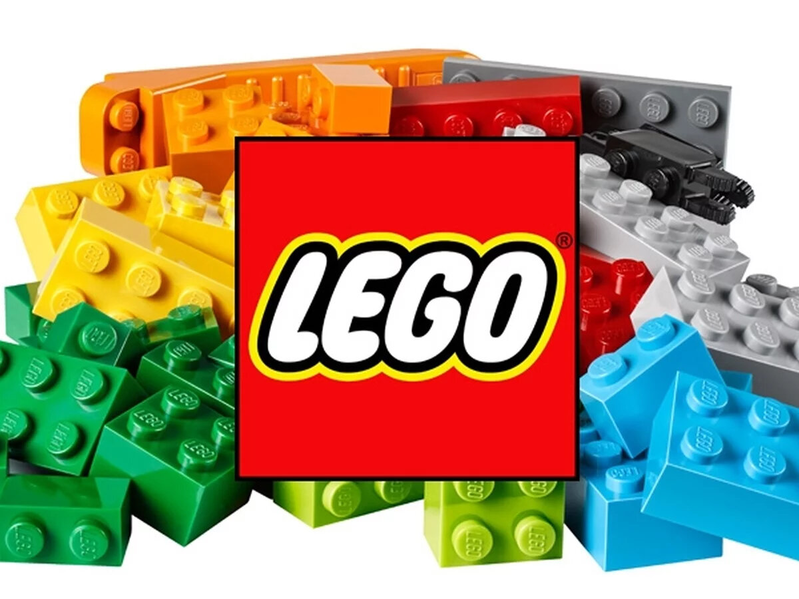
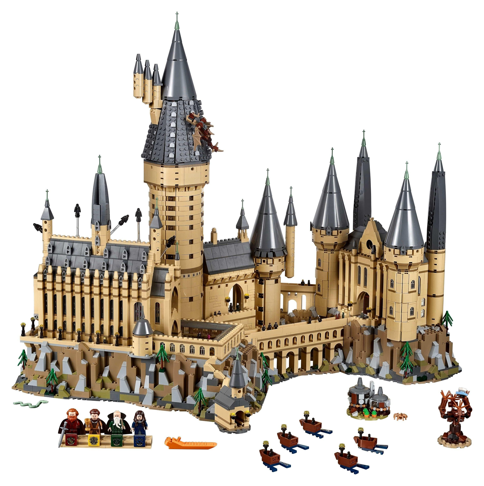
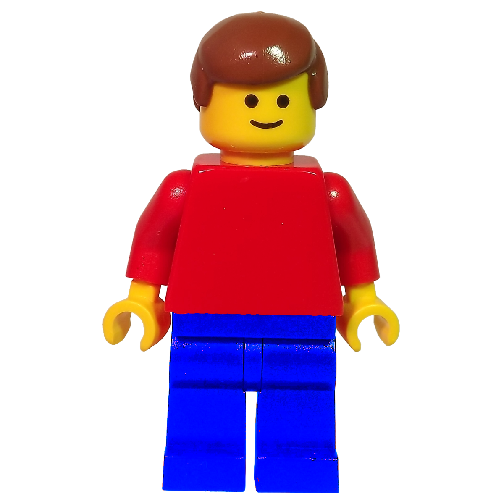

- Конструктор Lego Гарри Потер
- Минифигурка Lego
...
Lego — серии конструктора, представляющие собой наборы деталей для сборки и моделирования разнообразных предметов. Наборы Lego выпускает группа корпораций Lego Group, главный офис которой находится в Дании, в городе Биллунн. Компания была основана 10 августа 1932 года.Основным продуктом корпорации Lego являются разноцветные пластмассовые кирпичики, маленькие фигурки и тому подобное. Из Lego можно собрать такие объекты, как транспортные средства, здания, а также движущихся роботов. Всё, что построено, затем можно разобрать, а детали использовать для создания других объектов.
Lego: Harry Potter — серия игрушек Lego, базирующаяся на фильмах серии Гарри Поттер. Игрушки представляют собой модели важных сцен, транспортных средств и персонажей и созданы по мотивам первых пяти фильмов. Первые наборы появились в 2001 году после премьеры первого фильма «Гарри Поттер и философский камень». Последующие наборы выпускались одновременно с новыми фильмами, вплоть до фильма «Гарри Поттер и Орден Феникса".В январе 2004 года владелец и генеральный директор компании Lego Кирк Кристиансен объявил об изменениях в серии продукции, выпускаемой компанией, которая в то время сталкивается с потерей 1,4 млрд датских крон. Компания сосредоточится на своих основных продуктах, а не фильмах вроде «Гарри Поттера». Через неделю компания уточнила, что это не означает немедленные «радикальные изменения» и что игрушки по фильмам о Гарри Поттере будут продолжать выпускаться. Серия просуществовала до 2011 года, однако в 2018 году продолжила свое существования в качестве серии "Магический Мир"
Предшественники минифигурки были выпущены в 1975. Они были того же размера, что и современные минифигурки, но имели другой дизайн. У них был цельный торс без отдельных движущихся рук, отсутствовали нарисованные лица. Существовало несколько разных причесок и головных уборов различных цветов, включая шляпы, косички и ковбойские шляпы.Первые современные минифигурки были выпущены в 1978 — это были семь различных фигурок из серий Замок, Космос и Город. Следующие 11 лет минифигурки выпускали с единственным дизайном лица — две точки в качестве глаз и улыбка, отрисованные черным цветом. В 1989, минифигурки получили отображение различных эмоций, это было реализовано в серии Пираты.
| Год | Сколько Lego заработал |
|---|---|
| В 2023 году | $1,92 млрд |
| В 2022 году | $3,5 млрд |
| В 2021 году | $8,1 млрд |